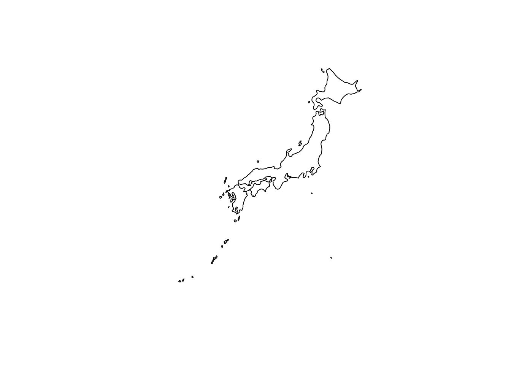
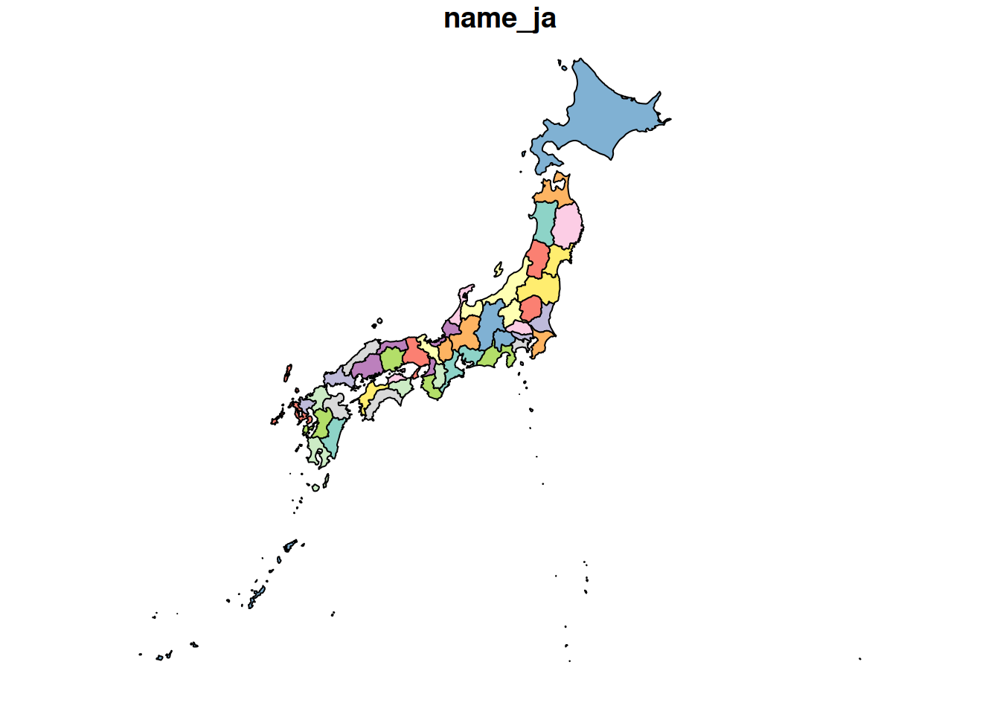

library(rnaturalearth)Rで日本地図を描く
r
rnaturalearthパッケージとrnaturalearthhiresパッケージを使ってRで日本地図を描く方法を紹介します。
パッケージのインストールと読み込み
install.packages("rnaturalearth")renvを使用している場合は、以下のコマンドでインストールします。
renv::install("necountries")その後、パッケージを読み込みます。
日本地図の描画
地図を描画するには、rnaturalearthdataパッケージも必要です。以下のコードで日本の地図を取得し、描画します。
install.packages("rnaturalearthdata")
renv::install("rnaturalearthdata") # renvを使用している場合ライブラリを読み込まなくても問題ありませんが、念のため読み込みます。
library(rnaturalearthdata)
Attaching package: 'rnaturalearthdata'The following object is masked from 'package:rnaturalearth':
countries110ne_countries()関数を使って日本の地図データを取得し、plot()関数で描画します。
japan <- ne_countries(
scale = "medium",
country = "Japan",
returnclass = "sf"
)
plot(japan["geometry"])
引数は、以下のように設定しています。
scale = "medium": 中程度の解像度の地図データを取得します。他にsmallやlargeも選択可能です。country = "Japan": 日本の地図データを指定します。returnclass = "sf": 地図データをsfオブジェクトとして返します。
これでRを使って日本地図を描くことができます。必要に応じて、地図のスタイルや詳細をカスタマイズしてください。
Note公式ドキュメント
ne_countries()関数の詳細については、公式ドキュメントを参照してください。
日本地図を県別に描画する
県別の日本地図を描画するには、rnaturalearthhiresパッケージを使用します。 インストールは、GitHubもしくはR-universeから行います。
NoteCRANからインストールができない理由
パッケージのサイズがCRANの推奨を超えているため、CRANからのインストールができないようです。
remotes::install_github("ropensci/rnaturalearthhires")または、以下のコードでインストールします。
install.packages(
"rnaturalearthhires",
repos = "https://ropensci.r-universe.dev",
type = "source"
)もしくは、renvを使用している場合は、以下のコマンドでインストールします。
renv::install("ropensci/rnaturalearthhires")パッケージを読み込みます。
library(rnaturalearthhires)県別の日本地図を取得し、描画します。
japan_prefectures <- ne_states(
country = "Japan",
returnclass = "sf"
)
plot(japan_prefectures["name_ja"])
海岸線もきれいに描画されていますね。
Note公式ドキュメント
na_states()関数の詳細については、公式ドキュメントを参照してください。